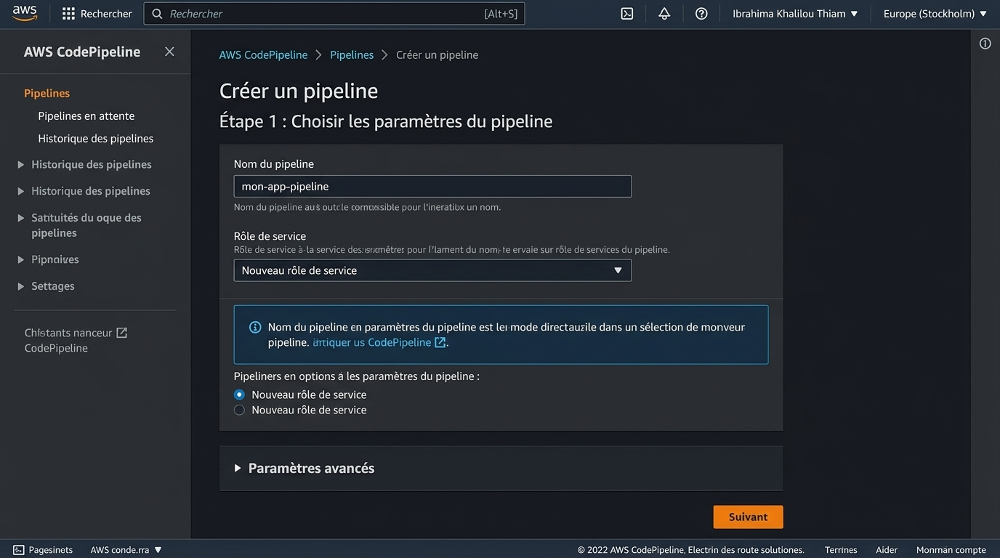

République du Sénégal
Ministère de l'Enseignement Supérieur et de la Recherche
Direction Générale de l'Enseignement Supérieur

Rapport DevOps — AWS CodePipeline
Présenté par : Ibrahima Khalilou Thiam
Master 2 Génie Logiciel UDB
Matricule 003
À M. Massamba LO
Année académique 2025
1. Objectif
AWS CodePipeline est un service de livraison continue entièrement géré qui automatise les pipelines de mise à jour. Il permet de modéliser, visualiser et automatiser les étapes nécessaires à la livraison de logiciels.
- Comprendre l'architecture d'un pipeline CI/CD avec les services AWS.
- Créer un pipeline connectant CodeCommit, CodeBuild et CodeDeploy.
- Configurer des stages (Source, Build, Deploy) avec approbation manuelle.
- Monitorer les exécutions et configurer des notifications.
Pourquoi CodePipeline ? CodePipeline orchestre l'ensemble du workflow CI/CD en connectant les services AWS entre eux. Chaque push sur CodeCommit déclenche automatiquement le pipeline : build → test → déploiement.
2. Architecture du pipeline CI/CD
Flux de travail typique :
┌─────────────────────────────────────────────────────────────────────────────┐
│ PIPELINE CI/CD AWS │
├─────────────────────────────────────────────────────────────────────────────┤
│ │
│ ┌──────────┐ ┌──────────┐ ┌──────────┐ ┌──────────┐ │
│ │ SOURCE │───▶│ BUILD │───▶│ APPROVAL │───▶│ DEPLOY │ │
│ │ │ │ │ │ │ │ │ │
│ │CodeCommit│ │CodeBuild │ │ Manual │ │CodeDeploy│ │
│ └──────────┘ └──────────┘ └──────────┘ └──────────┘ │
│ │ │ │ │
│ ▼ ▼ ▼ │
│ Git Push Build Artifacts EC2 / Lambda │
│ Trigger (JAR/WAR/Docker) Deployment │
│ │
└─────────────────────────────────────────────────────────────────────────────┘
Rôles de chaque service :
| Service |
Rôle |
Description |
| CodeCommit |
Source |
Dépôt Git hébergé, déclenche le pipeline à chaque push. |
| CodeBuild |
Build |
Compile le code, exécute les tests, produit les artefacts. |
| CodeDeploy |
Deploy |
Déploie les artefacts sur EC2, Lambda ou ECS. |
| S3 |
Storage |
Stocke les artefacts entre les stages. |
| CloudWatch |
Monitoring |
Logs et métriques d'exécution du pipeline. |
| SNS |
Notification |
Alertes par email/SMS en cas de succès ou échec. |
Intégration native : Tous ces services AWS communiquent entre eux via IAM et des rôles de service, sans configuration réseau complexe.
3. Prérequis
Avant de créer le pipeline, assurez-vous d'avoir configuré les éléments suivants :
1. Dépôt CodeCommit :
# Créer le dépôt
aws codecommit create-repository --repository-name mon-app
# Cloner et ajouter du code
git clone https://git-codecommit.us-east-1.amazonaws.com/v1/repos/mon-app
cd mon-app
echo "# Mon Application" > README.md
git add .
git commit -m "Initial commit"
git push origin main
2. Projet CodeBuild :
- Projet CodeBuild existant avec un fichier
buildspec.yml valide.
- Le projet doit pouvoir produire des artefacts (fichiers de sortie).
3. Application CodeDeploy :
- Application CodeDeploy créée.
- Groupe de déploiement configuré (instances EC2 taguées).
- Fichier
appspec.yml dans le dépôt.
4. Bucket S3 pour les artefacts :
# Créer un bucket pour les artefacts du pipeline
aws s3 mb s3://mon-pipeline-artifacts-bucket --region us-east-1
5. Rôles IAM :
# Le pipeline a besoin d'un rôle de service avec les permissions :
# - CodeCommit (lecture)
# - CodeBuild (démarrer build)
# - CodeDeploy (créer déploiement)
# - S3 (lecture/écriture artefacts)
aws iam create-role --role-name CodePipelineServiceRole --assume-role-policy-document file://trust-policy.json
Trust policy : Le rôle de service doit autoriser codepipeline.amazonaws.com à assumer le rôle.
4. Création du pipeline
Via la console AWS :
- Console AWS → Service CodePipeline → Create pipeline.
- Pipeline name :
mon-app-pipeline.
- Service role : choisir New service role ou un rôle existant.
- Advanced settings :
- Artifact store : choisir un bucket S3 existant ou en créer un.
- Encryption : AWS KMS (par défaut).
- Cliquer sur Next.

Ajout du stage Source :
- Source provider :
AWS CodeCommit.
- Repository name :
mon-app.
- Branch name :
main.
- Change detection :
AWS CodePipeline (déclenchement automatique).
- Cliquer sur Next.
Ajout du stage Build :
- Build provider :
AWS CodeBuild.
- Sélectionner le projet CodeBuild existant ou en créer un nouveau.
- Cliquer sur Next.
Ajout du stage Deploy :
- Deploy provider :
AWS CodeDeploy.
- Application name : sélectionner l'application CodeDeploy.
- Deployment group : sélectionner le groupe de déploiement.
- Cliquer sur Next.
Vérification et création :
- Vérifier la configuration (Source → Build → Deploy).
- Cliquer sur Create pipeline.
- Le pipeline se déclenche automatiquement après création.
# Via AWS CLI
aws codepipeline create-pipeline --cli-input-json file://pipeline-config.json
# Vérifier le statut
aws codepipeline get-pipeline-state --name mon-app-pipeline
# Déclencher manuellement
aws codepipeline start-pipeline-execution --name mon-app-pipeline
Déclenchement automatique : Une fois créé, le pipeline surveille le dépôt CodeCommit et se lance automatiquement à chaque push sur la branche configurée.
5. Configuration des stages
Chaque stage représente une phase du pipeline. Voici les stages courants :
Stage 1 — Source :
- Récupère le code depuis CodeCommit (ou GitHub, S3).
- Produit un artefact : le code source compressé.
- Se déclenche automatiquement à chaque push.
Stage 2 — Build :
- Utilise CodeBuild pour compiler et tester.
- Produit un artefact : le livrable (JAR, WAR, image Docker).
- Peut inclure des tests unitaires et d'intégration.
Stage 3 — Staging (optionnel) :
- Déploie sur un environnement de pré-production.
- Permet de valider le fonctionnement avant la production.
Stage 4 — Approval (optionnel) :
- Attend une validation manuelle avant de continuer.
- Envoi une notification SNS à l'approbateur.
Stage 5 — Deploy :
- Déploie sur l'environnement de production via CodeDeploy.
- Peut être en mode In-Place ou Blue/Green.
# Exemple de configuration pipeline (JSON)
{
"pipeline": {
"name": "mon-app-pipeline",
"stages": [
{
"name": "Source",
"actions": [{
"name": "Source",
"actionTypeId": {
"category": "Source",
"owner": "AWS",
"provider": "CodeCommit"
}
}]
},
{
"name": "Build",
"actions": [{
"name": "Build",
"actionTypeId": {
"category": "Build",
"owner": "AWS",
"provider": "CodeBuild"
}
}]
},
{
"name": "Deploy",
"actions": [{
"name": "Deploy",
"actionTypeId": {
"category": "Deploy",
"owner": "AWS",
"provider": "CodeDeploy"
}
}]
}
]
}
}
6. Gestion des artefacts
Les artefacts sont les fichiers produits par un stage et consommés par le suivant. Ils sont stockés dans un bucket S3.
Flux d'artefacts :
┌─────────────────────────────────────────────────────────────────┐
│ FLUX D'ARTEFACTS │
├─────────────────────────────────────────────────────────────────┤
│ │
│ Source Artifacts ──▶ Build Artifacts ──▶ Deploy Artifacts │
│ (Code source) (JAR/WAR/Docker) (Application live) │
│ │
│ │ │ │ │
│ ▼ ▼ ▼ │
│ S3 Bucket S3 Bucket EC2 / Lambda │
│ (input.zip) (output.zip) (running app) │
│ │
└─────────────────────────────────────────────────────────────────┘
Configuration dans CodePipeline :
- Input artifact : artefact reçu du stage précédent.
- Output artifact : artefact produit par le stage.
- Chaque stage peut avoir un ou plusieurs artefacts.
Exemple avec buildspec.yml :
# buildspec.yml — Définit les artefacts de sortie
version: 0.2
phases:
build:
commands:
- mvn package
artifacts:
files:
- target/*.jar
- appspec.yml
- scripts/**
discard-paths: no
Bonnes pratiques :
- Ne stocker que les fichiers nécessaires (éviter les dépendances).
- Utiliser
discard-paths: yes pour aplatir la structure.
- Configurer l'expiration des artefacts dans S3 (lifecycle policy).
7. Approbation manuelle
CodePipeline permet d'ajouter une étape d'approbation avant le déploiement en production.
Configuration :
- Dans le pipeline, ajouter un stage Approval entre Build et Deploy.
- Action provider :
Manual approval.
- SNS topic : sélectionner un topic SNS pour la notification.
- Custom data : message affiché à l'approbateur.
Fonctionnement :
- Le pipeline se met en pause au stade Approval.
- Un email est envoyé à l'abonné du topic SNS.
- L'approbateur clique sur Approve ou Reject.
- Le pipeline continue ou s'arrête selon la décision.
# Créer un topic SNS pour l'approbation
aws sns create-topic --name pipeline-approval
# S'abonner par email
aws sns subscribe --topic-arn arn:aws:sns:us-east-1:123456789012:pipeline-approval --protocol email --notification-endpoint devops@example.com
Cas d'utilisation : L'approbation manuelle est utile pour les déploiements critiques en production où une validation humaine est requise avant la mise en ligne.
8. Monitoring et notifications
Surveillance dans la console :
- Visualisation en temps réel de l'état de chaque stage.
- Historique des exécutions avec détails.
- Logs détaillés pour chaque action.
Notifications SNS :
# Créer un topic pour les notifications
aws sns create-topic --name pipeline-notifications
# Configurer les abonnements
aws sns subscribe --topic-arn arn:aws:sns:us-east-1:123456789012:pipeline-notifications --protocol email --notification-endpoint equipe@example.com
# Événements notifiés :
# - Pipeline execution started/succeeded/failed
# - Stage execution started/succeeded/failed
# - Action execution started/succeeded/failed
CloudWatch Events :
# Créer une règle CloudWatch Events
aws events put-rule --name pipeline-state-change --event-pattern '{
"source": ["aws.codepipeline"],
"detail-type": ["CodePipeline Pipeline Execution State Change"],
"detail": {
"state": ["FAILED", "SUCCEEDED"]
}
}'
Métriques CloudWatch :
PipelineExecutionTime : durée d'exécution.PipelineExecutionSuccess : nombre de succès.PipelineExecutionFailure : nombre d'échecs.
Tableau de bord : Vous pouvez créer un dashboard CloudWatch pour visualiser l'état de tous vos pipelines en un coup d'œil.
9. Bonnes pratiques
Sécurité :
- Utiliser des rôles IAM dédiés pour le pipeline (moindre privilège).
- Chiffrer les artefacts S3 avec AWS KMS.
- Ne jamais stocker de secrets dans le code ou les artefacts.
- Utiliser AWS Secrets Manager pour les credentials.
Fiabilité :
- Toujours tester le pipeline sur un environnement de staging avant la production.
- Configurer des timeouts appropriés pour chaque stage.
- Mettre en place des rollback automatiques en cas d'échec.
Performance :
- Utiliser le cache CodeBuild pour accélérer les builds.
- Paralléliser les stages indépendants quand c'est possible.
- Configurer l'expiration des artefacts S3 pour réduire les coûts.
Monitoring :
- Configurer des alertes SNS pour les échecs.
- Créer un dashboard CloudWatch pour la visibilité.
- Auditer régulièrement les logs CloudTrail.
⚠️ Erreurs à éviter :
- Déployer directement en production sans staging.
- Ignorer les échecs de tests dans le pipeline.
- Utiliser des credentials codés en dur.
- Ne pas configurer de rollback.
11. Conclusion
AWS CodePipeline est l'orchestrateur central qui connecte CodeCommit, CodeBuild et CodeDeploy en un flux automatisé. Points clés à retenir :
- Intégration native : Tous les services AWS communiquent automatiquement via IAM.
- Déclenchement automatique : Chaque push sur CodeCommit lance le pipeline sans intervention manuelle.
- Flexibilité : Ajout de stages d'approbation, de staging, de tests supplémentaires.
- Observabilité : Historique complet, logs détaillés, notifications en temps réel.
Ce pipeline CI/CD AWS constitue une base solide pour le déploiement moderne d'applications. En combinant ces services, vous obtenez un workflow automatisé, sécurisé et scalable qui couvre l'ensemble du cycle de vie du logiciel : du code source à la production.
Prochaine étape : Explorer des patterns avancés comme le déploiement Blue/Green avec CodeDeploy, les tests de charge automatiques, ou l'intégration avec des outils tiers comme Jenkins ou GitHub Actions.